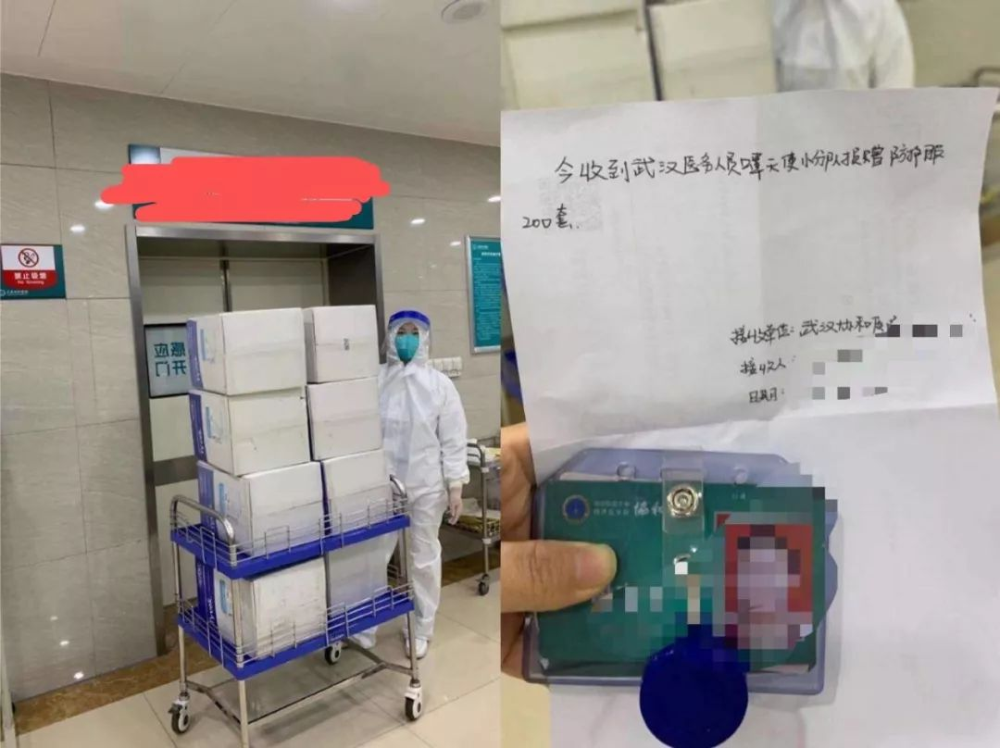
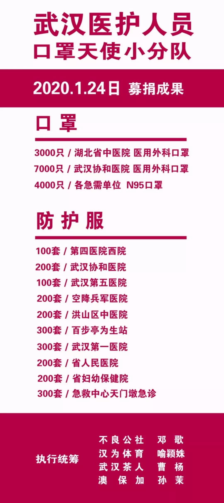
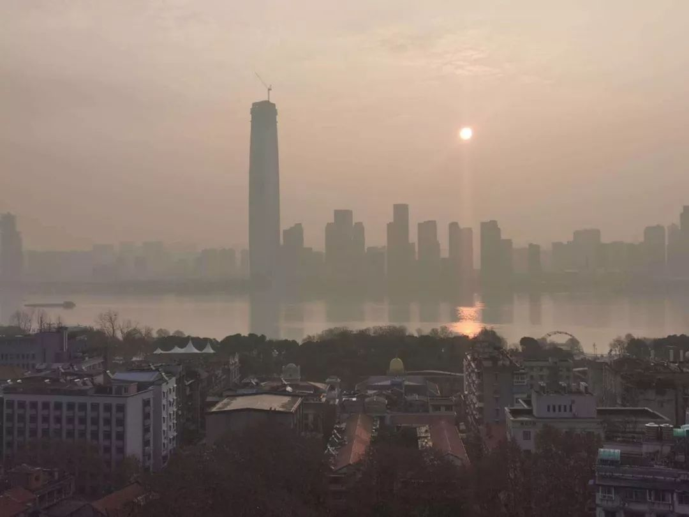
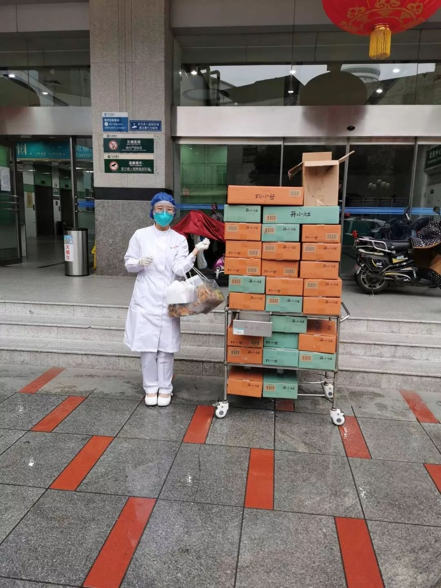
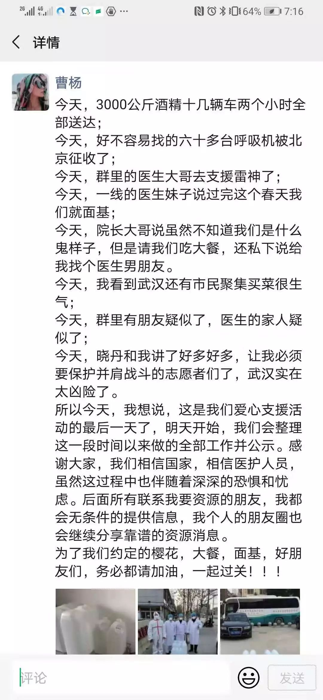

现场 | 湖北与武汉红会，物资捐赠卡在了这里？
原文链接 备份链接 海内外源源不断捐赠武汉，各大医院仍全面告急。被指定接收捐赠物资的主要机构湖北省与武汉市红十字会系统成为众矢之的，他们原本应该为重大突发事件做好准备，却一开始就因专业能力不足遭遇了信任危机。 本刊记者探访了武汉红十字会位 …

关注并星标消费新声
不错过泛消费任何最新动态
_
_
_

灾情尤其是规模性的疾病惯于与大城市如影随形，而“城市会因为一些人的腐败而蒙羞”，但对于这些生活于斯的武汉人来说，「不管政府做了什么，人们对自己出生或者成长的地方产生的归属感」，会驱动他们做些什么。
作者 | 邵乐乐
编辑 | 罗立璇
武汉人邓歌把父母安置在三亚后，又在20号回了武汉。她是武汉本地嘻哈厂牌「不良公社」的主理人，要赶在年前给公司的三十几个音乐人都分了钱。那时候，邓歌心里还盘算着要让20个本地Rapper在3月初参与一个武汉的大型演出，“大家都把它当成节日来看待”。
然而，从这一天开始，整个世界都变了。钟南山在邓歌回到武汉的晚间明确了疫情可以“人传人”，3天以后，离汉通道被正式关闭。现实灾难和恐慌情绪排山倒海般涌向武汉。
更重要的是，除了确诊病例指数级增长之外，物资紧缺成为最紧要的舆论关注点，武汉8家医院甚至亲自发公告，直接向社会各界征集捐赠防护物资。商业主体的捐赠响应很迅速，但这些外援运到武汉都需要时间，等待红会等机构分发，则需要更长时间，这几天医院怎么办？
为了赶在外援到来之前给医院找到能用的医疗物资，四位武汉女生组成了一个名叫“口罩天使小分队”的微信救援群给医院救急。除了带头的邓歌，还有小喻和她的朋友——原本患了腰伤在家休养的Momo，以及做茶叶出品、信奉“人无癖不与之交”的“小灵通”曹杨。
在四位女生的组织下，扩张到100多个人的天使小分队，就近武汉找钱、找医疗物资、找一线医生、找物流渠道，这些天帮55家武汉市内医疗机构捐赠了近万件防护服和20万个口罩。
类似天使小分队这样的志愿组织，在疫情中成为了武汉的一抹亮色。这些自发形成的组织，带来的凝聚力、参与感和共同体意识，在武汉最慌乱的那几天，是这个大机器无暇顾及个体时的重要补充力量。参与其中的个体，成为平时纸面上“城市精神”“市民精神”的具象表现，这些个体也由此被深深地嵌入城市肌理。

跑在时间前面
_
邓歌直接感知到医疗物资的紧缺，源于23号捐的1万个医用口罩。那天晚上，有个姑娘在朋友圈卖口罩，“湖北的朋友优先，半小时要确定”。当时还没人买这姑娘的口罩，邓歌看不得人着急，就决定自己买了捐给武汉的医院，还在朋友圈询问了谁有医院的收货地址。半小时内就有人帮邓歌联系上了协和医院和湖北省中医院送出了这1万个口罩。
但她发现，不止一家医院缺口罩，很多医院还缺防护服和护目镜。有个小姑娘甚至求着邓歌说，她妈妈的医院一件防护服都没有，但每天都在接触确诊患者的家属，如果有资源，她愿意出钱买。更多人找到邓歌问她，还有没有物资渠道？他们也想买了捐给医院。
在这种强烈的渴求推动下，邓歌的朋友小喻建议，一起拉一个「自愿进入、一起出钱出力」的群组，进行捐款救急。
于是，1月24日上午11点左右，一个名为“口罩天使小分队”的群组正式成立，小喻还拉来了原本就在帮武汉医院寻找资源的曹杨和有医疗从业经验的Momo。
三个多小时后，邓歌在朋友圈告诉大家，小分队已经完成了第二批总计1000个N95口罩+1万元捐款，并公示了三位捐赠者的信息。武汉rapper泥鳅也被邓歌带动着参与进了这场募捐。邓歌说，她收泥鳅的钱，是因为泥鳅已经闯出了名堂，是“武汉rapper里的佼佼者”，但其实rapper们都不宽裕。
在多个医院物资告急、患者涌入医院的那个夜晚，很多人都已经忘了，24日是大年三十。小喻吃了顿饭的工夫，刚成立的口罩群人数就超过了60个，有一线医护人员，有可以提供物资的，也有想要帮忙和捐款的，“还有医护人员的家属过来哭的”。
他们把通过资质审核的医生分流到了武汉地区医护人员群和周边市县的医护人员工作群，Momo负责统计、对接和跟进这些医院的需求，也帮助鉴定产品是否符合标准，并且收集医院的接收证明和捐赠函。
对于小分队来说，钱不是问题，朋友圈很多人都很积极踊跃。加上寻求物资帮助的人越来越多，需要经手的钱也越来越多。小喻因为在武汉一家知名企业任总裁办主任，人脉比较广，就开始专门负责「找钱」。邓歌则负责总体协调，找钱、找资源、解决物流都参与。
他们的原则是，只有找到新的物资，才会进行针对性募捐。因为当时物资很缺，而募捐的组织很多，有钱也不一定能产生作用。小喻后来统计，从24号到26号这三天，认识但不熟悉的朋友，平时只有工作联系的上司，甚至压根就不认识的陌生人，汇总到她那里的捐赠数额超过40万。
“他们都愿意相信我们，我们就要对得起他们的信任。”兑现这份信任，意味着要帮这40多万元找到符合医院需求的防护物资，并且能够在武汉封城的情况下克服物流难题，快速送到一线医护人员的手上，考验的是找货、配送、分发的系统能力。邓歌自己捐赠的1万个口罩也是从外地运过来的，她辗转许久第二天才找到了京东来运。
考虑到春节假期和武汉关闭对外通道的影响，进入武汉的运力更紧缺，大部分都要经过至少三四天才能送到一线医务人员手中。如果经由红会捐赠或定向捐赠，则意味着更长的流通周期。
但正在超负荷运转的医院等不及了。生命的抢救必须争分夺秒。从24日到28日，武汉市内的确诊病例已经从1287例暴增至5974例，尽管从政府救援通道到民营企业都迅速行动起来捐钱捐物，物资没有到位之前，这三四天的空缺怎么办？
天使小分队必须“跑在时间前面”。她们开始把物资源头转向武汉及其周边，就近调货的话，一天就可以送到医护人员手上。
一个问题是，当时有一个硬性规定：想要让医院以院办名义接收并且开具捐赠证明，所有的医疗物资必须符合国家“三证”标准。曹杨这几天经手的物资无数，但她只在1月23日对接到一家有“三证”资质的厂家，还是因为行动得早、有时间差。但在疫情恶势明朗化之后，根据《财新》的报道，几乎所有有生产资质的厂家都被各地政府管控了。
“三证”产品接触不到了，主要负责采购的曹杨又想到出口产品，这类产品有国外机构的资质证明，符合实际的使用标准，但没有经过国内体系的检测，医院院办不敢按章程接收，即使收了，也无法开具正式的捐赠票据。
到24号，曹杨找到一批出口货想尽快送到前线，但因为没有“三证”，医院收不了，她对这样的两难境地有些生气，“一线医护人员一边哭一边说什么东西都没有，一边我这边送不了，真**太难受了。”
生死博弈之时，冲在一线的科室工作人员先松了口，一批在武汉的出口防护服被小分队成功对接到了各大医院具体科室的人手上。曹杨说，这些医护人员实在是没办法了，如果不是弹尽粮绝，他们也不会接受出口物资的捐赠。
但对于天使小分队来说，绕开院办和采购部，意味着这只能属于“私人赠送”，他们可以不要医院给出的官方捐赠证明，那如何向捐款人交代？邓歌他们索性让科室的人准备一份加盖了科室公章的签收证明，作为捐赠凭证反馈给大家；实在不行，拿上自己的工作牌与签收物资合影也可以。

▲26日，一家医院收到了天使小分队捐赠的防护服
_
_
_
他们也担心过物资是否符合一线的需求，好在后续跟踪反馈发现，医护人员的使用效果比较好。

武汉人不会坐以待毙
_
只能在地下捐赠，他们就以“救急”和“私下赠送”为原则，碰到符合使用标准的物资，就马上抢下来，“像盯股市大盘似的”。
找到货源，小分队会先向一线科室的主任或护士长确认这些东西行不行。“他们说行我们就送，不行我们就不送，因为他们自己最清楚，这个东西能否给自己做到防护”，而且“总比裸着什么防护都没有要强”。
邓歌定下的原则还包括分配数量要均匀，每个医院几百套，“我们不能救所有的人，但是我们碰到的那些，绝不能让他在群里面哀嚎两天什么都没有。”
募捐第一天，天使小分队连续工作了15个小时，总计落实了4000个3M9001口罩和2100套防护服。给她们提供防护服是武汉一家供应商，合伙人老王连年夜饭都没吃，就被拉来连夜给医院发防护服，因为仓库也在武汉，很多医院当晚就在现场拿到了这些防护服。到第二天，天使小分队总计向20多家医院捐赠了4330件防护服。

▲天使小分队公布的单日募捐详情，为了增加公信力，让大家知道去哪里找到他们，四位女生把自己的就职公司和真实姓名都写了上去
_
_
_
更多人看到他们在做的事，踊跃地加入进来。一个叫琬晴的女孩儿，不仅帮口罩群募资、寻找物资，还帮她们面对部分的质疑声，因为记不住口罩型号，就把型号写在了自己的微信昵称后面。
小喻的朋友钱婧本来在接送医护人员，知道他们最后一公里送货有难度后，主动过来帮她们送货。唯一的男生小杜，因为开着一辆“鄂A”的车经过湖南，被当地人上报后全家被迫原地隔离，他就只能远程帮四位女生管理几个微信群。
人性的闪光点在微暗时刻尤其慰藉人心。武汉的防护服供应商老王被医护人员拉着感谢了之后，“一拍大腿”，索性又联合天使小分队加捐了2500件防护服。浙江的洗手消毒液厂家，知道他们是在支援武汉之后，立即决定以成本价向她们供货。
等到1月26日，接近不眠不休运转了三天的天使小分队已经把5030件防护服送到了30多家医疗机构的手上。Momo说那几天的微信好友多了1000多个，负责找物资采购渠道的曹杨，电话号码被传播到朋友圈之后一度变成了热线电话。
那天晚上，曹杨在朋友圈向大家实时更新了最新募捐成果，并宣布接下来他们将停止募资捐赠，转型为资源对接群，为一线医护、物资资源和想要捐款的人提供对接服务。
她如此解释转型的原因：除了疲于应付，他们也担心自己经验不足，控制不住，这么复杂庞大的项目如果持续下去可能会失控。
在这几天，因为只公布了捐款明细和大概的物资购买情况，已经有人跑来质疑他们，“别人捐赠都有视频，为什么你们没有”。还有人盗用他们的捐赠接收图片，这是小喻组织捐赠以来唯一不舒服的事情。Momo很担心他们几个“做了好事，反而会有麻烦”。
邓歌倒是不怕，但她鼓励本想低调的几位女生跟想要采访他们的媒体聊聊，因为“这样信息会更加透明”。
她还有个模糊的判断——事情好像有了好转迹象。26日下午，小喻发了两张武汉火车站的照片，照片显示站台上堆满了从全国各地运送过来的医疗物资，“相信国家一定会助我大武汉挺过难关”。邓歌在朋友圈分享了这两张照片，告诉大家“很多物资到了武汉”。
也在这一天，民政部刊文动员慈善力量依法有序参与、支持肺炎疫情防控，但要求慈善组织为湖北省武汉市疫情防控工作募集的款物，统一由湖北省红十字会等五家机构统一接收。刊文发布后，据北京大学法学院教授葛云松的说法，医院就只能接受统一调配，不敢直接接收民间捐赠了。
邓歌还想着既然物资都已经到武汉了，他们不如及时转方向支援一些二级城市，她看到黄冈、天门的医护人员在他们群里哀嚎，她很难受，“别人都领到东西了，就他们什么都没有”。他们在26日当天就单独拉了四个针对二级城市的告急小组，让有资源调动能力的募捐人单独对接这些医院，“我跟一个已经捐过5万元的募捐人说，你别再捐款了，你就直接帮黄冈、天门这两个城市的医院解决一下物资吧。”
那天晚上，邓歌自己又听了无数遍《武汉的夜》，这是她的rapper朋友们在2019年秋天创作的歌，歌里写的所有景点都历历在目，一些景点和灯光秀还配合军运会重新妆点了一番。“秋天的时候都是那么美好，结果现在到了冬天，生活变成了这个样子，就很感伤。”

▲邓歌拍摄的武汉
_
_
_
末了，她告诉我，她已经做好了坚持两个月的准备，“我们武汉人都不是那种坐以待毙的性格”。她签约的rapper本来这个假期应该在武汉训练的，但她现在也不知道什么时候可以再恢复，她在考虑把公司的音乐人聚集到网上制作音乐，去年他们就帮腾讯做了一些版权音乐，“很多音乐人靠这个吃饭，我们那些孩子如果不能来公司，我在网上也能把这个项目操持起来。”
万一武汉没有抑制住第二次大爆发，食物也短缺的话，邓歌说她还打算联合餐饮企业搞食物捐赠，“如果到时候餐饮成了问题，那餐饮业就应该站出来人，对不对？”
“人人都是你”
_
转型资源对接群之后，因为有大量一线科室的联系方式，碰到有捐赠资源的人，天使小分队就把这些人直接对接给科室，“这样子是最快速有效的”。很多人知道了他们做的事儿，也相信他们能够快速把捐赠物资送到一线。
他们还借用一手的信息优势，较早转向了大家还没注意到的周边产品的募捐，比如长面罩、长鞋套、洗手液和自热饭、压缩饼干。2月3日，在家憋了很久的邓歌又主动提出要去押车送货，这一天她们陆续把2360份自热饭送到了一线医生们的手上。

▲天使小分队给医院送自热饭
_
_
_
邓歌说，虽然送得细、送的少，但他们一家一家跑，眼见为实，心理也踏实。
前几天的募捐和落实已经帮助他们积累了做捐赠的信任度。有人加曹杨的微信，想要通过天使小分队捐赠一批手洗消毒液，“他相信我们团队能够把所有的物资，所以他愿意我们代表他来完成这样一件事情。”
这个捐赠人找到的消毒液生产厂家在浙江，厂家也答应第二天就给他们发货，大家都很高兴。但第二天一大早，浙江当地政府把包括这个厂家在内的有资质的生产企业都管起来了，厂家最后索性把一个外贸单拨出来救急武汉。
曹杨正在跟进一批由一位华人从瑞士发往武汉的货。这位姐姐本来去瑞士旅游，疫情爆发后，她把旅游行程全部停下来，通过瑞士当地医院采购到了一批货，但摆在面前的报关、清关和物流配送都还没有着落，尤其是在武汉已经不能停落飞机的情况下，通关需要去上海或周边的长沙等地，再从外地运到武汉，全程都顺利的话，加起来也需要八到十天的时间。
“其实大家现在都想为武汉做事，但都做得很曲折。”尤其是从国外进入中国的医疗物资，与国内本身的医疗体系标准不兼容，如何通过国内认证，是从世界各地运过来的救援物资会面临的实际障碍。
更重要的是，即使各种层面的力量已经近乎动员了全球资源，人们还是发现，武汉的医院仍旧在防护用品紧缺的悬崖边缘。武汉近乎一个随时都在发生人道灾难的无底洞。
到1月30日，舆论矛头开始指向红十字会，他们接收了大量物资，但没有能力及时调配。甚至有网友扒出红会给武汉协和医院3000个普通口罩，却给莆田系两家医院3万多个“N95”口罩。而武汉协和医院科室人员不止一次前往物资分配地武汉国博领取物资，也被拒绝。参与红会的志愿者也透露，有时候内部用纸记录，也不清点数量，速度极慢。
物资捐赠卡在红会那儿，邓歌他们也气炸了。几天后，大家还亲眼目睹了红十字会说「医院可以凭介绍信去领物资是造谣」的滑稽始末。
舆论对红十字会的指责，随着几名官员被惩处、火神山医院的竣工和方舱医院的开建，在昨日迎来一个小结点。2月4日的新闻联播播报，中宣部已经调集300多名记者进入湖北和武汉统筹疫情防控宣传，这意味着官方机制对武汉的援助已经初有成效。

▲邓歌在朋友圈公示了他们的募捐成果
_
_
_
来自政府层面的大体系初有成效后，天使小分队过手的捐赠物品少了，但他们也不敢松懈下来，不记名的「义务调配」和物资对接，每天都会在社群里快速推进。
有人在群里问，哪里有能给捐献物资打印不干胶的店，邓歌立马推荐了武汉一家印漫画的公司给他；有人找到邓歌想捐赠12台凌光显微镜，想捐给协和、同济等医院，Momo随即帮忙对接了这些医院的相关负责人；有家公司还找到曹杨捐赠了能够提高医务人员免疫力的注射用胸腺肽。小喻前天晚上高兴得睡不着觉，因为她搞到了一批急缺的酒精资源，昨天就顺利送到了前线，邓歌还给她起了个外号“酒精女王”。
曹杨说，她只要在朋友圈发“雷神呼叫”“火神呼叫”的相关资源求助，身边做打印的、做亚克力标识牌的朋友就立马过来找她想要帮忙，“我只能做这个，你帮我问问他们需不需要”。

▲曹杨朋友圈记载了天使小分队的每一天
_
_
_
跟这些志愿者接触几天下来，就会发现一个事实，这种自发组织产生的参与感和共识感，能够激发很多人对城市本身的认同感。在Momo的眼里，很多武汉人怕歧视，但并不害怕这次疫情给他们身体带来什么样的危险，“如果有危险的话，不会这么多人不怕死，都出去送物资或者帮别人。”
新武汉人小喻说，自己以前也get不到武汉人的幽默点，但现在也算跟这座城的人都是生死之交了。胆子很大、执行力又很强的邓歌说，灾难过后他们一定要喝一顿酒，还要为志愿者做一场免费的演出。
也就是在这个时候，你会发现，这些之前只是共享了「武汉」这个地理位置、但互不关联的个体，因为抗疫的需要，组合在一起，成为了紧密协作的连接体。在非正常运行的当下，也许根本就不存在一个精力充沛的、什么都懂的城市管理体系来妥善地处理这些无穷无尽的、千变万化的难题，尤其是在某些环节的工作效率与社会严重脱节的情况下。
Momo这几天都没空看也不想看社交媒体上纷繁复杂的信息了，“政府也好，舆论也好，这些都不是重点，我身边也有朋友被确诊，被隔离，但我们都有心无力，没有办法，但如果说把一线医护人员的安全保证了，大家的安全就都没有问题。”
灾情尤其是规模性的疾病惯于与大城市如影随形，而“城市会因为一些人的腐败而蒙羞”（邓歌语），但对于这些生活于斯的武汉人来说，「不管政府做了什么，人们对自己出生或者成长的地方产生的归属感」，会驱动他们做些什么。邓歌说她相信武汉这座城，他们也会“凭着直觉疯狂战斗”。
“做这个事情会感觉，人人都是你，你明白吧？”
_
_
end
_
_
**©消费新声原创内容 转载请联系授权
**
【爆料或寻求报道】加微信号：Suburb001
【商务合作】加微信号：sansheng_kefu
武汉人系列报道

_
_
_
_
_
_
_
_
采访征集
除了普遍的疫情防治，「三声」也非常关注疫情对产业和从业者们的短期和长远影响，正在征集相关采访信息，希望能对行业提供一些帮助。
如果您是文娱和消费领域的创业者、从业者，如果您愿意和我们聊聊疫情对您个人或者公司的影响，或者后续计划、需要的帮助等等，欢迎您随时联系我们。
您可以在本文评论区或者公众号后台留言，也可以发送邮件至sansheng@disansheng.com，留下您的联系方式和简要介绍，我们会第一时间与您联系。
让我们一起努力，共克时艰。


原文链接 备份链接 海内外源源不断捐赠武汉，各大医院仍全面告急。被指定接收捐赠物资的主要机构湖北省与武汉市红十字会系统成为众矢之的，他们原本应该为重大突发事件做好准备，却一开始就因专业能力不足遭遇了信任危机。 本刊记者探访了武汉红十字会位 …
原文链接 备份链接 武汉市已将所有捐赠物资集中统一调配，这有助于物尽其用，但配送效率亟须提升。这几日陆续有社会捐赠物资送到武汉协和医院，但仅有一线医护人员能穿上防护服，很多医用物资仍然紧缺 文 |《财经》 …
原文链接 备份链接 在这场抗击新病毒的战争中，一线医护人员不得不为自身防护揪心，他们和医院、捐赠人一起被迫卷入一场医疗物资的募捐赛 文 |《财经》记者王丽娜 辛颖 编辑 | 王小 这是历次疫情中，一线医院大批量第一次直接向公众募捐，也是 …
原文链接 备份链接 2月1日，一家专业从事医药分销配送的企业，开始协助武汉红十字会处理仓库中堆积的援助物资。无序的状况有了很大改观。 1月23日武汉“封城”以来，医院防护物资告急，各种民间力量应声而动。 华中科大和武汉大学的美国北加 …
原文链接 备份链接 国内外的口罩都在送往武汉，可武汉医院的不仅缺口罩，甚至即将用完。人民日报在其官微发问：究竟是物资紧缺还是物资分配环节存在问题？ 截止到目前，协和医院收到的物资全部来自企业和个人捐赠。物资直接对接到各地疫情指挥部或是各 …